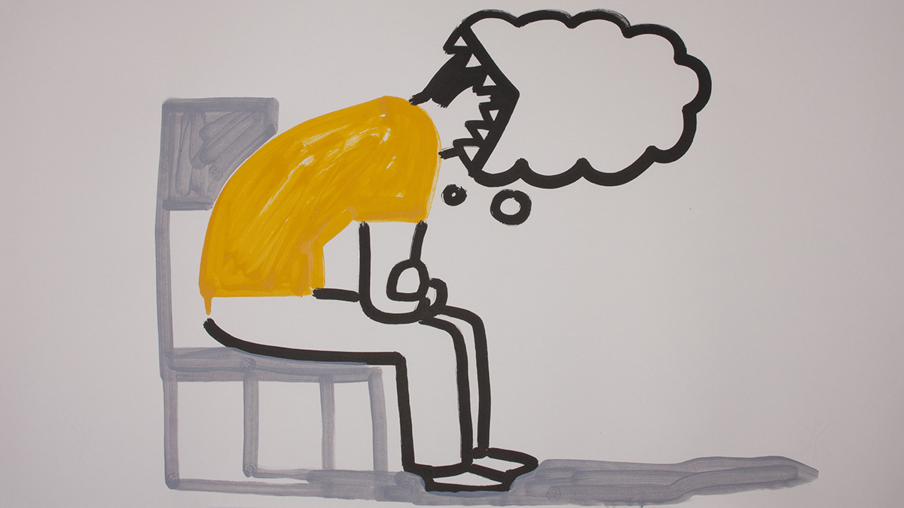

One of the most important ways to take care of your skin is to protect it from the sun. A lifetime of sun exposure can cause wrinkles, age spots and other skin problems — as well as increase the risk of skin cancer.
Cover your skin with tightly woven long-sleeved shirts, long pants and wide-brimmed hats. Also consider laundry additives, which give clothing an additional layer of ultraviolet protection for a certain number of washings, or special sun-protective clothing — which is specifically designed to block ultraviolet rays.

Smoking makes your skin look older and contributes to wrinkles. Smoking narrows the tiny blood vessels in the outermost layers of skin, which decreases blood flow and makes skin paler. This also depletes the skin of oxygen and nutrients that are important to skin health.
Smoking also damages collagen and elastin — the fibers that give your skin strength and elasticity. In addition, the repetitive facial expressions you make when smoking — such as pursing your lips when inhaling and squinting your eyes to keep out smoke — can contribute to wrinkles.

Uncontrolled stress can make your skin more sensitive and trigger acne breakouts and other skin problems. To encourage healthy skin — and a healthy state of mind — take steps to manage your stress. Get enough sleep, set reasonable limits, scale back your to-do list and make time to do the things you enjoy. The results might be more dramatic than you expect..